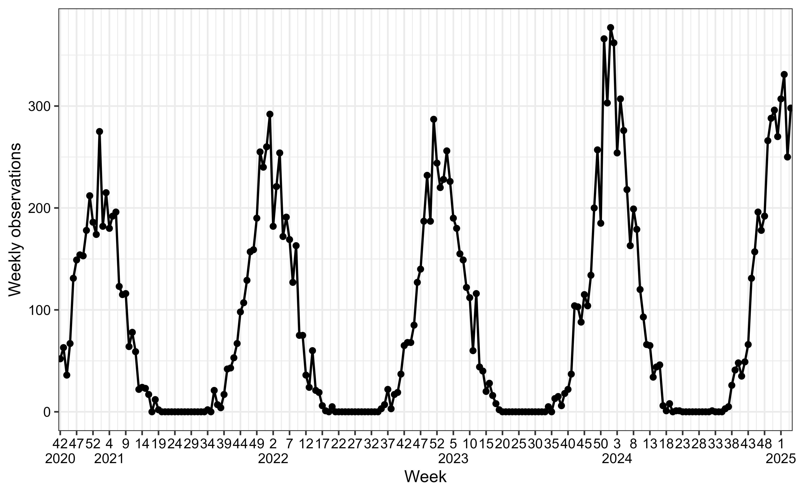
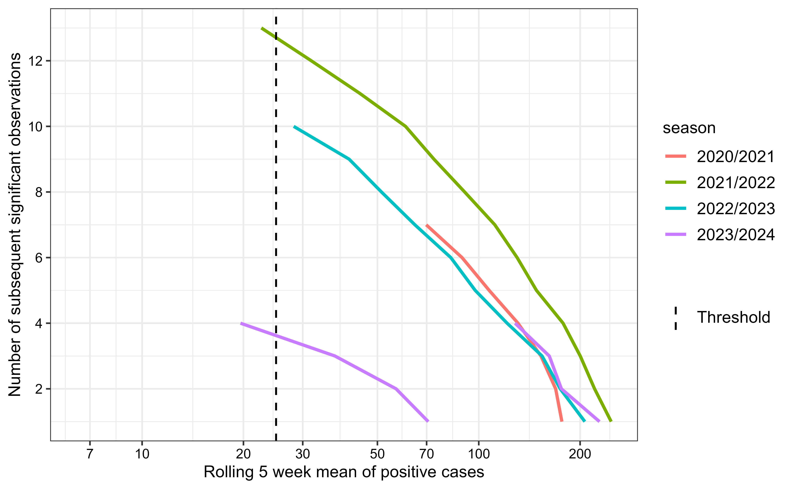

Automated Detection of Seasonal Epidemic Onset and Burden Levels in R
Source:vignettes/aedseo.Rmd
aedseo.RmdIntroduction
The aedseo package performs automated and early
detection of seasonal epidemic onsets and estimates the breakpoints for
burden levels from time series data stratified by season. The seasonal
onset (seasonal_onset()) estimates growth rates for
consecutive time intervals of cases and calculates the rolling average
of observations (cases or incidence) in the selected time intervals. The
burden levels (seasonal_burden_levels()) use the previous
seasons to estimate the burden levels of the current season. The
algorithm allows for surveillance of pathogens, by alarming when the
observations have significant growth in the selected time interval and
based on the disease-specific threshold, while also evaluating the
burden of current observations based on previous seasons.
Seasonal data
To apply the aedseo algorithm, data needs to be
transformed into a tsd object. If you have your own data,
the to_time_series() function can be used with the
arguments: cases, incidence,
population, incidence_denominator,
time and time_interval. As default both
seasonal_onset() and seasonal_burden_levels()
use cases, but if incidence is in the
tsd object the output will be in incidence
instead. If population is additionally given as arguments
the function will calculate the incidence per 100.000
(default for incidence_denominator which can be changed in
input). In the following section, the application of the algorithm is
shown with simulated cases created with the
generate_seasonal_data()function. More information about
the function can be found in the
vignette("generate_seasonal_wave").
In the following figure simulated data (solid circles) are visualised as cases over time (weeks). The solid line connects these circles, representing the underlying mean trend over five years of weekly data.
plot(tsd_data)
Determining season
Respiratory viruses can circulate in different seasons based on the location. In the nordic hemisphere they mostly circulate in the fall and winter seasons, hence surveillance is intensified from week 40 to week 20 in the following year. To include all data, the season in the example is set from week 21 to week 20 in the following year. In this example burden levels and seasonal onset will be estimated for season 2024/2025.
Determining the disease specific threshold
When cases are low there is a risk that randomness will result in significant growth estimates in isolated periods. To increase the robustness of the method a disease-specific threshold is introduced. It should be set such that subsequent estimates of growth are likely to be significant as well. The disease-specific threshold can be determined by examining continuous periods with sustained significant growth, and determine at what number of cases these events occur.
In this example the disease-specific threshold is determined based on consecutive significant weeks from all available previous seasons. Significant weeks are defined as those with a case count that has a significant positive growth rate.
To capture short-term changes and fluctuations in the cases, a
rolling window of size \(k = 5\) is
used to create subsets of the cases for model fitting, and the
quasipoisson family is used to account for
overdispersion.
The estimate_disease_threshold() function can be used to
automatically estimate the disease-specific threshold. As default it
uses;
- Three time steps that have to be significant for the sequence to be considered in the estimation.
- A max gap time of one time step that is allowed to be non-significant between two significant sequences.
- Three historical seasons.
- The longest sequence closest to the peak.
- A decay factor of 0.8 such that the influence of older seasons diminishes exponentially.
The disease-specific threshold can also be estimated analytically. In
this example it is done with the four available previous seasons. The
seasonal_onset() function can be used for this purpose,
without providing the disease-specific threshold. Then the
consecutive_growth_warnings() function can be used to
create groups with subsequent significant weeks. The data can then be
analysed, else you can use plot/autoplot to visualise the sequences of
significant weeks for each season.
The average_observation_window variable represents the
average of cases over a five-week window, which is used to define the
disease-specific threshold.
tsd_onset <- seasonal_onset(
tsd = tsd_data,
k = 5,
family = "quasipoisson",
na_fraction_allowed = 0.4,
season_start = 21, # Season starts in week 21
season_end = 20, # Season ends in week 20 the following year
only_current_season = FALSE
)
consecutive_gr_warn <- consecutive_growth_warnings(
onset_output = tsd_onset
)
autoplot(
consecutive_gr_warn,
k = 5,
skip_current_season = TRUE
) +
ggplot2::geom_vline(
ggplot2::aes(xintercept = 25, linetype = "Threshold"),
color = "black", linewidth = 0.6
) +
ggplot2::scale_linetype_manual(
name = "",
values = c("Threshold" = "dashed")
)
From the plot above, we observe the length of periods (weeks) with subsequent significant growth rates (y-axis). The season with the longest consecutive period of growth is 2021/2022, lasting 14 weeks. However, since we are determining a threshold specifically for the 2024/2025 season, it’s important to prioritize the most recent seasons. The 2023/2024 season shows two periods of significant growth, with the first being the longest and coinciding closely in timing with the consecutive growth period observed in 2022/2023. We select a disease-specific threshold of 25 to ensure early detection of the seasonal onset while minimizing false positives.
In other words, a season onset is declared when the average case count over five weeks surpasses 25 and is accompanied by a significantly positive growth rate.
Inspect the exact conditions around each detected season start
consecutive_gr_warn |>
dplyr::filter(!is.na(significant_counter)) |>
dplyr::filter(season != max(consecutive_gr_warn$season)) |>
dplyr::group_by(season) |>
dplyr::filter(significant_counter == max(significant_counter)) |>
dplyr::mutate(disease_threshold = average_observations_window,
week = ISOweek::ISOweek(reference_time)) |>
dplyr::select(season, week, disease_threshold)
#> # A tibble: 5 × 3
#> # Groups: season [4]
#> season week disease_threshold
#> <chr> <chr> <dbl>
#> 1 2020/2021 2020-W46 69.8
#> 2 2021/2022 2021-W41 22.6
#> 3 2022/2023 2022-W42 28.2
#> 4 2023/2024 2023-W41 19.6
#> 5 2023/2024 2023-W48 128.By inspecting the output from the above code, the disease-specific
threshold is established at 25 cases.
Applying the main algorithm
The primary function of the aedseo package is the
combined_seasonal_output() which integrates the
seasonal_onset() and seasonal_burden_levels()
functions to deliver a comprehensive seasonal analysis. Detailed
information about each function and their respective arguments can be
found in the vignette("seasonal_onset") and
vignette("burden_levels").
seasonal_output <- combined_seasonal_output(
tsd = tsd_data,
disease_threshold = 25,
method = "intensity_levels",
family = "quasipoisson"
)The default function estimates onset and burden levels for the
current season. If it is desired to see calculations for all previous
seasons, the only_current_season argument should be set to
FALSE. Note: Burden levels can not be estimated
for the first season and needs at least two seasons of data as the
estimations are based on data from previous seasons.\
The aedseo package implements S3 methods including the
plot(), predict() and summary()
functions specifically designed for objects of the aedseo
package. predict() is only relevant for
tsd_onset objects. An example of using the
summary() S3 method with tsd_onset and
tsd_burden_level objects is shown here.
Seasonal onset output can be extracted by:
summary(seasonal_output$onset_output)
#> Summary of tsd_onset object with disease_threshold
#>
#> Model output:
#> Reference time point (first seasonal onset alarm in season): 2024-11-03
#> Observations at reference time point: 131
#> Average observations (in k window) at reference time point: 65.8
#> Growth rate estimate at reference time point:
#> Estimate Lower (2.5%) Upper (97.5%)
#> 0.312 0.517 0.117
#> Total number of growth warnings in the series: 11
#> Latest growth warning: 2024-12-22
#> Latest average observations warning: 2025-01-26
#> Latest seasonal onset alarm: 2024-12-22
#>
#> The season for reference time point:
#> 2024/2025
#>
#> Model settings:
#> Called using distributional family: quasipoisson
#> Window size: 5
#> The time interval for the observations: weeks
#> Disease specific threshold: 25
#> Incidence denominator: NASeasonal burden output can be extracted by:
summary(seasonal_output$burden_output)
#> Summary of tsd_burden_levels object
#>
#> Breakpoint estimates:
#> very low : 25.000000
#> low: 61.188227
#> medium: 149.759965
#> high: 366.541871
#>
#> The season for the burden levels:
#> 2024/2025
#>
#> Model settings:
#> Disease specific threshold: 25
#> Incidence denominator: NA
#> Called using distributional family: lnormPlot the comprehensive seasonal analysis
The plot() S3 method for
tsd_combined_seasonal_output objects allows you to get a
complete visualisation of the combined_seasonal_output()
analysis of the current season.
# Adjust y_lower_bound dynamically to remove noisy small values
disease_threshold <- 25
y_lower_bound <- ifelse(disease_threshold < 10, 1, 5)
plot(
x = seasonal_output,
y_lower_bound = y_lower_bound,
time_interval = "3 weeks"
)Using the intensity_levels method to define burden
levels, the seasonal onset is likely to fall within the low
or medium category. This is because the
very low breakpoint is the disease-specific threshold, and
season onset is only identified if the five-week average of the
observations exceed this threshold along with a significant positive
growth rate.
Investigate historical estimates
The historical_summary() function for
tsd_onset objects provides historical estimates from all
previous seasons. By utilising this function, it is easy to assess
whether current estimates align with previously observed patterns for a
specific pathogen, or if significant changes have occurred. Such changes
might result from altered testing practices, pathogen mutations, or
other factors.
If the analysis indicates notable deviations from past patterns, it is advisable to revisit the method used to define the disease-specific threshold, as it might need some adjustment.
# Get `tsd_onset` object
tsd_onset <- seasonal_onset(
tsd = tsd_data,
disease_threshold = 25,
family = "quasipoisson",
season_start = 21,
season_end = 20,
only_current_season = FALSE
)
historical_summary(tsd_onset)
#> # A tibble: 5 × 10
#> season onset_time peak_time peak_intensity lower_growth_rate_onset
#> <chr> <date> <date> <dbl> <dbl>
#> 1 2020/2021 2020-11-15 2021-01-10 275 0.00681
#> 2 2021/2022 2021-10-24 2022-01-09 292 0.155
#> 3 2022/2023 2022-10-23 2022-12-25 287 0.412
#> 4 2023/2024 2023-10-22 2024-01-07 377 0.501
#> 5 2024/2025 2024-11-03 2025-01-12 331 0.117
#> # ℹ 5 more variables: growth_rate_onset <dbl>, upper_growth_rate_onset <dbl>,
#> # onset_week <dbl>, peak_week <dbl>, weeks_to_peak <dbl>Example with incidence
In the tsd object from previous example we add that the
population is 1.000.000 and increases with 1000 each week. The default
incidence denominator (100.000) is used.
tsd_incidence <- to_time_series(
cases = tsd_data$cases,
time = tsd_data$time,
population = seq(from = 1000000, by = 1000, length.out = length(tsd_data$cases))
)Determine the disease-specific threshold:
 Run the main algorithm:
Run the main algorithm:
seasonal_output_incidence <- combined_seasonal_output(
tsd = tsd_incidence,
disease_threshold = 2,
method = "intensity_levels",
family = "quasipoisson"
)NOTE: Since the population changes during the time series
this is adjusted for in the growth rate estimations in
seasonal_onset() by adding it as offset to the model.
Plot results for the current season with cases pr. 100.000 (incidence):
plot(
x = seasonal_output_incidence,
y_lower_bound = 1,
time_interval = "3 weeks"
)